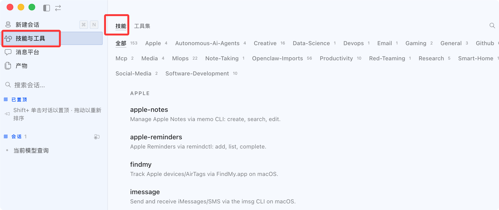

Hermes Agent スキル（Skills）
記憶システムが Hermes に覚えさせたのは「あなたが誰か」ならば、スキル（Skills）システムは Hermes に覚えさせたのは「物事のやり方」。
スキル（Skills）は Hermes Agent のプログラム的記憶です。
スキルにより、エージェントは経験から再利用可能なワークフローを作成し、将来のセッションで再利用できます。
スキルシステムは Hermes Agent の中核となる差別化機能です。スキルの作成、使用中の改善、セッション間での知識保持ができる学習ループを内蔵した唯一のエージェントです。
スキルとは
スキルは、エージェントの動作を定義する一連の指示とツールであり、次のことができます：
- ワークフローの自動化— 一般的なタスクパターンのカプセル化
- セッションをまたいだ学習— 成功したソリューションの保存と再利用
- コミュニティとの共有— 他の人が作成したスキルの公開とインストール
- 自己改善— 使用しながらの継続的な改善
詳細は Skills チュートリアルを参照してください：https://www.runoob.com/ai-agent/skills-agent.html。
スキル vs 記憶
| 比較の観点 | スキル（Skills） | 記憶（Memory） |
|---|---|---|
| 内容の種類 | 操作手順、作業方法 | 環境の事実、ユーザーの好み |
| ロードのタイミング | オンデマンド、使用時にのみロード | 毎回のセッションで自動注入 |
| ファイルサイズ | 大きくなり得る（数百行） | 簡潔に保つべき（重要な事実） |
| Token 消費 | 未ロード時はゼロ消費 | 毎回のセッションで固定消費 |
| 作成者 | あなた、Agent、または Hub からインストール | Agent が対話に基づいて自動作成 |
| 代表的な例 | Kubernetes へのデプロイ方法 | ユーザーは上海在住、簡潔な返答を好む |
経験則：参考ドキュメントに書くような内容ならスキル、付箋に貼るような内容なら記憶です。
スキルのディレクトリ構造
すべてのスキルは~/.hermes/skills/ディレクトリに保存されます——これが唯一のデータソースです。
初回インストール時、組み込みスキルはリポジトリからこのディレクトリにコピーされます。Hub からインストールしたスキルや Agent が自動生成したスキルもここに保存されます。
~/.hermes/skills/ ├── mlops/ # 分类目录 │ ├── axolotl/ │ │ ├── SKILL.md # 主指令文件（必须） │ │ ├── references/ # 补充文档（按需加载） │ │ ├── templates/ # 输出模板 │ │ ├── scripts/ # 辅助脚本 │ │ └── assets/ # 附属资源 │ └── vllm/ │ └── SKILL.md ├── devops/ │ └── deploy-k8s/ # Agent 自动创建的技能 │ ├── SKILL.md │ └── references/ ├── .hub/ # Skills Hub 状态 │ ├── lock.json │ ├── quarantine/ # 安全隔离区 │ └── audit.log └── .bundled_manifest # 记录内置技能版本
各スキルディレクトリに必須のファイルはSKILL.mdのみで、その他のサブディレクトリはすべてオプションです。
Agent は、組み込み、Hub からインストール、自分で作成したものに関係なく、あらゆるスキルを変更または削除できます。
段階的開示：Token 効率的ロードの仕組み
スキルシステムの最も賢い設計のひとつは段階的開示です——Agent はすべてのスキル内容を一度にコンテキストに詰め込むのではなく、3つの層に分けてオンデマンドでロードします。
Level 0: skills_list() → [{name, description, category}, ...]
会话启动时加载，约 3,000 tokens
↓ 只有需要用某个技能时，才继续
Level 1: skill_view(name) → 完整 SKILL.md 内容 + 元数据
↓ 只有需要参考文档时，才继续
Level 2: skill_view(name, path) → 技能内的特定 references/ 文件
この設計の実際的な意味は非常に直接的です：
- 50個のスキルをインストールしても、今回のセッションで1個しか使わなければ、その1個の完全な内容だけが Token を消費します
- Level 0 のスキルリスト（約3,000 tokens）は毎回のセッション開始時に固定ロードされ、Agent がどのスキルを使えるかを把握します
- 残りの内容は Agent が必要と判断したときだけロードされるため、使わなければ消費されません
段階的開示は、スキルシステムがすべてのドキュメントをシステムプロンプトに詰め込むのとは異なる中核的な設計です。これにより、スキル数が無限に増えても、毎回のセッションの Token コストがほぼ一定であることが保証されます。
組み込みスキル一覧
Hermes のインストール時には多数の組み込みスキルが付属しており、すぐに使用できます。
コマンドラインで hermes を起動：
hermes
以下のコマンドを使用してスキル関連コマンドを確認：
/skills

以下のコマンドでセッション内のすべてのスキルを表示できます:
/skills browse
hermes コマンドラインで直接確認:
hermes skills list

デスクトップ版では左側の「スキルとツール」メニューをクリックして確認：

スキルの分類
組み込みスキルは機能別にサブディレクトリに分類されています：
| 分類ディレクトリ | 含まれるスキルタイプ |
|---|---|
| software-development/ | GitHub PR、コードレビュー、テスト駆動開発 |
| research/ | arXiv 論文検索、ウェブリサーチ |
| productivity/ | OCR ドキュメント、ASCII アート、プラン生成 |
| mlops/ | Axolotl ファインチューニング、vLLM デプロイ、Flash Attention |
| creative/ | ライティング、図表（Excalidraw） |
| devops/ | Kubernetes、クラウドデプロイ |
オプションスキル（デフォルトではインストールされない）
オプションスキルは hermes-agent とともにリリースされ、optional-skills/に保存されていますが、デフォルトでは有効化されておらず、明示的なインストールが必要です。
これらのスキルは通常、追加の依存関係が必要か、ニッチな用途向けです：
例
hermes skills install official/blockchain/solana
hermes skills install official/mlops/flash-attention
# すべてのオプションスキルを閲覧
hermes skills browse
スキルの使用
スキルには2つのトリガー方法があります：スラッシュコマンドによる直接呼び出しと、自然言語による自動トリガーです。
スラッシュコマンドによる直接呼び出し
インストール済みの各スキルは自動的にスラッシュコマンドになります。
あらゆるプラットフォーム（CLI、Telegram、Discord など）で直接使用：
例
/ascii-art で「...」と書かれた"Hello World"バナー
/plan で Todo アプリの REST API を設計する
/github-pr-workflow で認証モジュールのリファクタリング用 PR を作成する
# スキル名のみを入力（タスクを付けない）——Agent に何が必要かを尋ねさせる
/excalidraw
組み込みのplanスキルは良い例です：/plan [请求]を実行すると、スキル指示が Hermes に、まずコンテキストを確認し、その後 Markdown 形式の実装計画を生成して.hermes/plans/に保存するように指示します。タスクを直接実行するのではなく。
自然言語によるトリガー
自然な会話でもスキルをトリガーでき、Hermes はskill_viewツールで自動的にロードします：
例
arXiv で diffusion model に関する最新の論文を検索して
Agent はarxivスキルが必要だと認識し、自動ロードして実行します。
キーワードでのスキル検索
例
/skills search docker
/skills search 音楽
# コマンドラインで検索
hermes skills search deployment
Hubからスキルをインストールする
組み込みスキルに加えて、agentskills.io コミュニティ Hub からサードパーティ製スキルをインストールすることもできます。
コマンドラインでのインストール
例
hermes skills install official/research/arxiv
hermes skills install official/creative/songwriting-and-ai-music
# セッション内でインストール
/skills install official/creative/songwriting-and-ai-music
# URL から直接インストール（公開された任意の SKILL.md ファイル）
hermes skills install https://sharethis.chat/SKILL.md
# インストールして名前をカスタマイズ
hermes skills install https://example.com/SKILL.md --name my-skill
インストール後の動作：
- スキルディレクトリは
~/.hermes/skills/ - にコピーされ
skills_list出力に - スラッシュコマンドとして使用できます
インストールされたスキルは新しいセッションで有効になります。現在のセッションですぐに使用したい場合は、/reset で新しいセッションを開始するか、--now パラメータを追加してプロンプトキャッシュを即座にリフレッシュしてください（トークンを余分に消費します）。
インストールの検証
例
hermes skills list | grep arxiv
# またはセッション内で確認
/skills search arxiv
GitHubリポジトリからスキルソースを追加する
例
hermes skills tap add github.com/username/my-skills-repo
# その後、リポジトリ内のスキルをインストールできます
hermes skills install username/my-workflow
/learn コマンド：ソースからワンクリックでスキルを生成
/learn既知の内容（または一連の参考資料）を、SKILL.md を手書きせずに再利用可能なスキルへ素早く変換する近道です。
これはオープンエンドです：説明できる任意の内容を指定すると、Agent は既存のツールを使って資料を収集し、標準の作成仕様に従ってスキルを生成します。
例
/learn ~/projects/acme-sdk の REST クライアント、認証とページネーションに焦点を当てる
# オンラインドキュメントページから学習（web_extract で取得）
/learn https://docs.example.com/api/quickstart
# 完了したばかりのワークフローから学習
/learn さっき staging サーバーをデプロイした手順
# 貼り付けたメモや説明したフローから学習
/learn 経費精算フロー：ポータルを開き、経費報告書を新規作成し、領収書を添付して、提出する
/learn の動作原理
プロセス全体は3つのステップに分かれます：
- Agent は既存のツールを使用してソース資料を収集します（ファイルの読み取り、Webページの取得、現在の会話の分析）
- 公式 Skill 作成標準に従って SKILL.md を起草します（≤60 文字の説明、標準の章順序、Hermes ツールフレームワーク、コマンドを捏造しない）
- を通じて
skill_manageツールで保存します——有効にしている場合はwrite_approval、最初に承認を要求します
/learn は CLI、メッセージゲートウェイ、TUI、Dashboard のすべてで使用でき、動作は完全に同じです。Dashboard の Skills ページにはグラフィカルなLearn a skillパネルもあり、ディレクトリ、URL、自由テキストの3つの入力ボックスがあります。
Agent によるスキルの自動作成
これは Hermes スキルシステムの中で最もユニークな部分です：Hermes は再利用可能なプロセスをスキルとして保存することで経験から学習します。
複雑な問題を解決したとき、ワークフローを発見したとき、または修正されたとき、その知識をスキルドキュメントとして永続化し、将来のセッションで読み込むことができます。
スキルは時間とともに蓄積され、Agent はあなたの特定のタスクと環境をますます得意とするようになります。
トリガーのタイミング
複雑なタスク（通常は5ステップ以上のツール呼び出しを含む）を完了した後、Hermes は自発的に提案することがあります：
我注意到我们刚才走完了一个完整的 Docker 多阶段构建流程。 要不要我把这个工作流程保存为技能，下次可以直接复用？
Agent に手動でスキル作成を要求する
いつでも自発的に要求することもできます：
例
さっきの K8s デプロイフローをスキルとして保存して
# プロジェクトの規約を学習してスキルとして保存
このプロジェクトの Git コミット規約を学習して、スキルとして保存して
スキル書き込み権限の制御
デフォルトでは Agent は自由にスキルを作成および変更できます。
承認モードを有効にすると、Agent はスキルを作成または変更するたびに最初にあなたの確認を求めます：
例
# スキル書き込み承認を有効化
skills:
write_approval: true # デフォルトは false
write_approval を有効にすると、Agent が書き込もうとするスキル内容をプレビューして、承認するかどうかを決定できます。これは重要な安全境界です——スキルファイルには署名や出典情報がなく、区別できませんAgent 自身が書いたもの和手動でディレクトリに置いたもの。
SKILL.md フォーマットの詳細
スキルは YAML フロントマター付きの Markdown ファイルです。
以下は完全なフォーマット仕様で、すべての任意フィールドと必須フィールドを含みます：
例
name: my-skill-name # 小文字とハイフン、≤64 文字（必須）
description: ユーザーが <トリガー条件> を必要とするときに使用。<1行の動作説明>。
≤1024 文字（必須）
version: 1.0.0
author: あなたの名前
license: MIT
platforms: [macos, linux] # 任意——OSを制限
metadata:
hermes:
tags: [python, automation, devops]
category: devops
related_skills: [other-skill, another-skill]
fallback_for_toolsets: [web] # 任意——条件付きアクティベーション
requires_toolsets: [terminal] # 任意——条件付きアクティベーション
config: # 任意——必要な設定項目を宣言
- key: myskill.api_key
description: "API Key の説明"
default: ""
prompt: "API Key を入力してください"
required_environment_variables: # 任意——必要な環境変数を宣言
- name: TENOR_API_KEY
prompt: Tenor API Key
help: https://developers.google.com/tenor から取得
required_for: GIF 検索機能
---
# スキルタイトル
## When to Use
- トリガー条件リスト
- 逆条件（このスキルを使ってはいけない場合）
## Procedure
1. 最初のステップ
2. 2番目のステップ
3. API ドキュメントが必要な場合、参照をロード：skill_view("my-skill", "references/api-docs.md")
## Pitfalls
- 既知の失敗パターン：[説明]。解決方法：[対策]
- 境界条件に注意：[説明]
## Verification
check-command を実行して結果が正しいか検証します。
フィールドの制限
| フィールド | 制限 | 説明 |
|---|---|---|
| name | ≤64 文字 | 小文字とハイフン |
| description | ≤1024 文字 | スキル選択の重要な根拠であり、Agent はこれに基づいてロードするかどうかを判断します |
| SKILL.md 全体 | ≤100,000 文字（約 36k トークン） | 20k を超える場合は references/ に分割することを推奨 |
条件付きアクティベーション：インテリジェントな表示/非表示の仕組み
スキルは現在のセッションで利用可能なツールに応じて自動的に表示または非表示にできます、手動管理は不要です。
これは多環境デプロイで非常に実用的です——同じスキルリストが異なる環境で自動的に適応します。
例
metadata:
hermes:
fallback_for_toolsets: [web] # web ツールセットが利用できない場合にのみ表示
requires_toolsets: [terminal] # terminal ツールセットが利用できる場合にのみ表示
fallback_for_tools: [web_search] # web_search ツールが利用できない場合にのみ表示
requires_tools: [terminal] # terminal ツールが利用できる場合にのみ表示
| フィールド | 動作 |
|---|---|
| fallback_for_toolsets | 列挙されたツールセット利用可能な場合は非表示、利用不可な場合は表示 |
| requires_toolsets | 列挙されたツールセット利用可能な場合は表示、利用不可な場合は非表示 |
| fallback_for_tools | 同上、ただしツールセットではなく特定のツールを対象とする |
| requires_tools | 同上、ただし特定のツールを対象とする |
実際の例：組み込みのduckduckgo-searchスキルが使用しますfallback_for_toolsets: [web]。
Firecrawl API Key を設定している場合（web ツールセット利用可能）、このスキルは自動的に非表示になり、Agent は直接使用しますweb_search。
API Key が欠けている場合（web ツールセット利用不可）、DuckDuckGo スキルが自動的に代替案として表示されます。
スキルバンドル（Skill Bundle）：組み合わせ読み込み
スキルバンドルは、複数のスキルを1つのスラッシュコマンドにまとめた YAML ファイルです。
実行/<bundle-name>すると、バンドル内のすべてのスキルが同時に読み込まれます。あるタスクが常に同じスキルセットを必要とする場合に適しています。
スキルバンドルの作成
例
hermes bundles create backend-dev \
--skill github-code-review \
--skill test-driven-development \
--skill github-pr-workflow \
-d "バックエンド機能開発——コードレビュー、テスト、PR ワークフロー"
使用時：
例
/backend-dev 認証ミドルウェアをリファクタリング
Agent は3つのスキルを同時に読み込み、認証ミドルウェアをリファクタリングをユーザー指示として追加します。
スキルバンドルのファイル形式
スキルバンドルは格納されます~/.hermes/skill-bundles/<slug>.yaml：
例
name: backend-dev
description: バックエンド機能開発——コードレビュー、テスト、PR ワークフロー
skills:
- github-code-review
- test-driven-development
- github-pr-workflow
プラットフォームレベルのスキル管理
プラットフォームごとに異なるスキルサブセットを有効化できます。
例えば、開発関連のスキルを Telegram に表示する必要はありません：
例
hermes skills config
これによりインタラクティブ TUI が開き、各プラットフォーム（CLI、Telegram、Discord など）でスキルを個別に有効化または無効化できます。
スキルの手動作成：5分でマスター
スキルは、YAML フロントマター付きの Markdown ファイルにすぎません。
スキルの作成は5分もかからず、登録不要で、置くだけで~/.hermes/skills/使用できます。
ステップ1：ディレクトリを作成
例
mkdir -p ~/.hermes/skills/my-category/my-skill
ステップ2：SKILL.md を記述
例
name: fly-deploy
description: Python アプリを Fly.io にデプロイします。環境変数と永続ボリュームの設定を含みます。
version: 1.0.0
metadata:
hermes:
tags: [python, deployment, fly.io]
category: devops
requires_toolsets: [terminal]
---
# Python アプリを Fly.io にデプロイ
## When to Use
- ユーザーは Python アプリ（Flask/FastAPI/Django）を Fly.io にデプロイする必要がある
- 環境変数または Volume 永続ストレージの設定が必要
- 対象外：非 Python アプリ、または他のクラウドプラットフォームの使用
## Procedure
1. fly CLI がインストールされているか確認：fly version
2. Fly にログイン：fly auth login
3. プロジェクトルートで初期化：fly launch
4. fly.toml を設定（[build] と [http_service] セクションを確認）
5. 必要な Secret を設定：fly secrets set KEY=VALUE
6. デプロイ：fly deploy
7. ログを確認：fly logs
## Pitfalls
- fly launch は Python アプリを自動検出して Dockerfile を生成します。
ほとんどの場合、手動で書く必要はありません
- 環境変数は .env ファイルではなく fly secrets set で設定します
（.env はアップロードされません）
- 無料プランには毎月のマシン実行時間の制限があり、長期稼働アプリはアップグレードを推奨
## Verification
fly status # アプリの状態を確認
fly open # ブラウザでアプリを開く
ステップ3（オプション）：参考ファイルを追加
例
mkdir -p ~/.hermes/skills/my-category/my-skill/references
# API ドキュメントやサンプルなどを references/ に配置
# SKILL.md では次のように参照します：
# 詳細な API パラメータが必要な場合は、参照ドキュメントを読み込みます：
# skill_view("fly-deploy", "references/fly-toml-reference.md")
ステップ4：テスト
例
hermes chat -q "/fly-deploy この FastAPI アプリのデプロイを手伝って"
スキルのセキュリティ注意事項
書き込み承認ゲート
スキルファイルには署名や来歴情報がありません——区別できませんAgent 自身が書いたもの和手動でディレクトリに置いたもの。
書き込み承認メカニズムとpending/ディレクトリ管理が重要なセキュリティ境界です。
承認を有効にすると、write_approval: trueすべてのスキル書き込み操作（Agent による自動作成を含む）が承認待ち状態として一時保存され、あなたが審査してから書き込みを許可するかどうかを決定します。
セキュリティスキャン
スキルコンテンツは読み込み前に脅威スキャンされ、プロンプトインジェクションやバックドアインストール命令などの悪意のあるパターンを検出します。
脅威パターンに一致するコンテンツは[BLOCKED: ...]プレースホルダーに置き換えられ、モデルに到達するのを防ぎます——ファイル自体は削除されず、脅威コンテンツのみがブロックされます。
Hubからインストールする際の注意事項
| ソースタイプ | リスクレベル | 推奨 |
|---|---|---|
| 公式組み込みスキル（official/ プレフィックス） | 低 | Hermes リポジトリ由来、審査済み、直接インストール可能 |
| コミュニティスキル（URL またはサードパーティレジストリ） | 中 | インストール前に hermes skills inspect でコンテンツをプレビュー |
| .hub/quarantine/ 内のスキル | 高 | 隔離された疑わしいスキル、インストール非推奨 |
例
hermes skills inspect https://example.com/SKILL.md
スキルの更新とメンテナンス
確認と更新
例
hermes skills check
# 更新可能なすべてのスキルを更新
hermes skills update
# 特定のスキルを更新
hermes skills update arxiv
組み込みスキルのリセット
組み込みスキルを変更して元に戻したい場合：
例
hermes skills reset google-workspace
# 完全な復元：現在のファイルを削除し、組み込みバージョンを再コピー
hermes skills reset google-workspace --restore
Hubスキルのアンインストール
例
hermes skills uninstall my-hub-skill
アンインストールは Hub 経由でインストールされたスキルのみ削除できます。組み込みスキルはアンインストールできません（ただし、hermes skills opt-out で更新の受け取りを停止できます）。
スキルを Skills Hub に公開する
価値あるスキルを作成した場合、agentskills.io に公開してコミュニティと共有できます：
例
hermes skills publish ~/.hermes/skills/devops/fly-deploy
# Hub で公開したスキルを表示
hermes skills list --mine
Blueprint：スキル + 定期タスク
スキルはスケジュール計画を宣言でき、共有可能な自動化ブループリントになります：
例
metadata:
hermes:
tags: [blueprint, email]
blueprint:
schedule: "0 8 * * *" # 毎朝8時（Cron 式）
description: "毎日のメールダイジェスト"
このスキルをインストールした後、実行/suggestionsすると、Hermes が対応するスケジュールタスクの作成を自動的に提案するのを確認できます：
例
/suggestions
# 提案を受け入れ、Cronタスクを作成
/suggestions accept 1
# 提案を無視（再表示しない）
/suggestions dismiss 1
# 公式の厳選自動化テンプレートを表示
/suggestions catalog
外部スキルディレクトリ
Hermes の外部でスキルを管理している場合——例えば複数の AI ツールで共有している~/.agents/skills/ディレクトリ——Hermes にこれらのディレクトリを同時にスキャンさせることができます。
例
# 外部スキルディレクトリを設定
skills:
external_dirs:
- ~/.agents/skills
- /home/shared/team-skills
- ${SKILLS_REPO}/skills
パスは~展開と${VAR}環境変数の置換をサポートします。
重要なルール：
- ローカルディレクトリ（
~/.hermes/skills/）が優先——同名スキルの場合、ローカルバージョンが外部バージョンを上書きします - 外部ディレクトリは書き込み保護の境界ではありません：Hermes プロセスに書き込み権限がある場合、Agent は外部ディレクトリ内のスキルを変更できます
よく使うコマンド早見表
例
hermes skills list # すべてのスキルを一覧表示
hermes skills search <キーワード> # ローカルと Hub のスキルを検索
hermes skills browse # 公式のオプションスキルを閲覧
# ─── スキルをインストール ───────────────────────────────────────────────
hermes skills install official/<カテゴリ>/<名前> # 公式のオプションスキルをインストール
hermes skills install https://...SKILL.md # URL からインストール
hermes skills tap add github.com/user/repo # GitHub スキルソースを追加
# ─── スキル情報 ───────────────────────────────────────────────
hermes skills inspect <id> # プレビュー（インストール前の確認）
hermes skills check # 更新を確認
hermes skills config # プラットフォームごとの有効/無効設定（TUI）
# ─── 更新とメンテナンス ─────────────────────────────────────────────
hermes skills update # すべてのスキルを更新
hermes skills update <name> # 特定のスキルを更新
hermes skills reset <name> # 初期状態にリセット
hermes skills reset <name> --restore # 組み込みバージョンを完全に復元
hermes skills uninstall <name> # Hub スキルをアンインストール
# ─── 公開 ────────────────────────────────────────────────────
hermes skills publish <path> # レジストリに公開
# ─── スキルパック ──────────────────────────────────────────────────
hermes bundles create <name> --skill <s1> --skill <s2> -d "説明"
hermes bundles list
hermes bundles delete <name>
# ─── セッション内スラッシュコマンド ──────────────────────────────────────────
/skills # すべてのスキルを一覧表示
/skills search <キーワード> # スキルを検索
/skills browse # オプションスキルを閲覧
/skills install <id> # スキルをインストール
/<skill-name> [タスクの説明] # スキルを直接使用
/learn <ソースの説明または URL> # ソースからスキルを生成
/suggestions # Agent の自動化提案を表示 # Agent の自動化提案を表示
カスタムスキルの作成
スキルは~/.hermes/skills/ディレクトリに保存されます。各スキルは次のものを含むskill.mdディレクトリです：
~/.hermes/skills/
└── my-custom-skill/
└── skill.md
スキルのフォーマット
--- name: my-custom-skill description: 一个有用的技能描述 version: 1.0.0 author: your-username tags: [utility, example] --- # 技能指令 您是一个专业的[角色]，擅长[领域]... ## 核心能力 1. 能力 A 2. 能力 B 3. 能力 C ## 使用示例 ### 示例 1 [描述] ### 示例 2 [描述]
スキルのメタデータ
| フィールド | 説明 | 必須 |
|---|---|---|
| name | スキル名（一意の識別子） | 是 |
| description | スキルの説明 | 是 |
| version | セマンティックバージョン | 否 |
| author | スキルの作者 | 否 |
| tags | カテゴリタグの配列 | 否 |
スキルコマンドリファレンス
| コマンド | 説明 |
|---|---|
hermes skills list |
インストール済みのすべてのスキルを一覧表示する |
hermes skills search <query> |
利用可能なスキルを検索する |
hermes skills install <skill> |
スキルをインストールする |
hermes skills uninstall <skill> |
スキルをアンインストールする |
hermes skills create <name> |
新しいスキルを作成する |
hermes skills update <skill> |
スキルを更新する |
クリックしてノートを共有
<p style="font-size:14px;">ノートはこの記事の内容を拡張したものである必要があります！</p><br> <p style="font-size:12px;"><a href="../tougao.html" target="_blank">記事の投稿はこちらをクリック</a></p> <p style="font-size:14px;"><a href="../w3cnote/runoob-user-test-intro.html" target="_blank">登録招待コードの取得方法</a></p> <h3 class="text-muted"><i class="fa fa-info-circle" aria-hidden="true"></i> ノートを共有する前に<a href=";.html" class="runoob-pop">ログイン</a>が必要です！</h3> <p><a href="../w3cnote/runoob-user-test-intro.html" target="_blank">登録招待コードの取得方法</a></p>